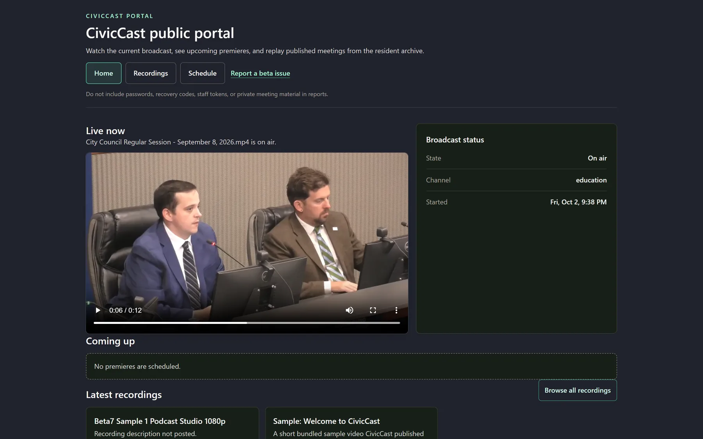
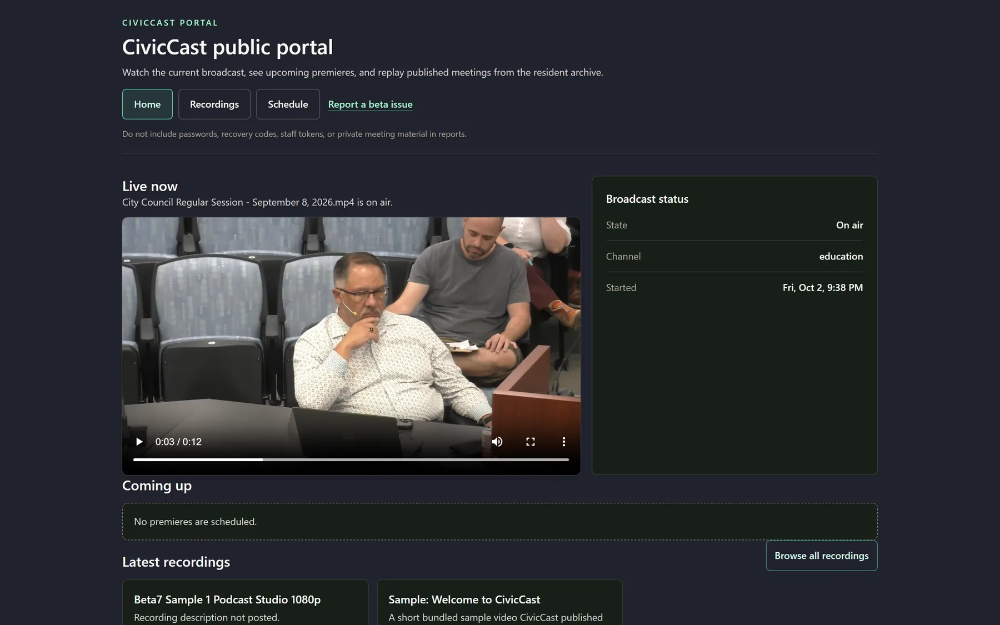
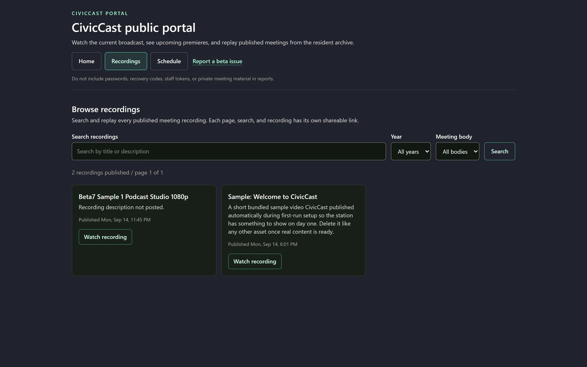
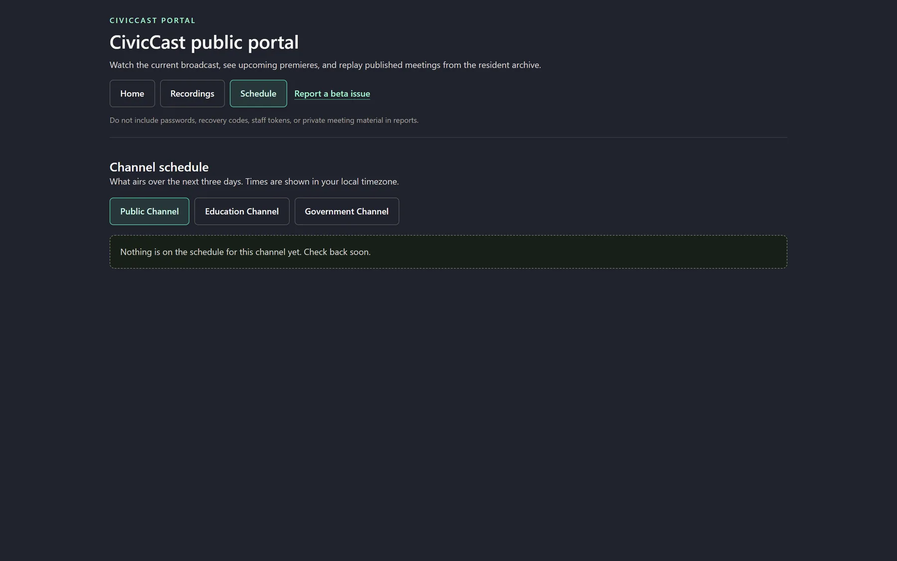
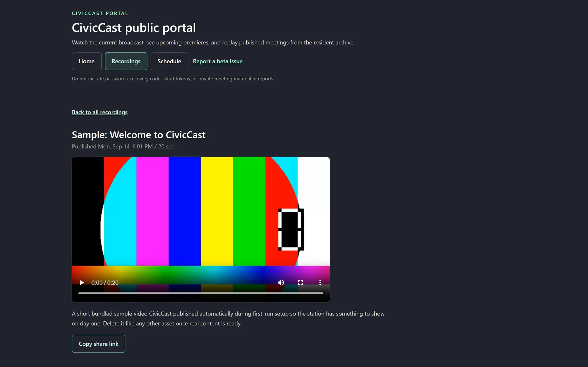
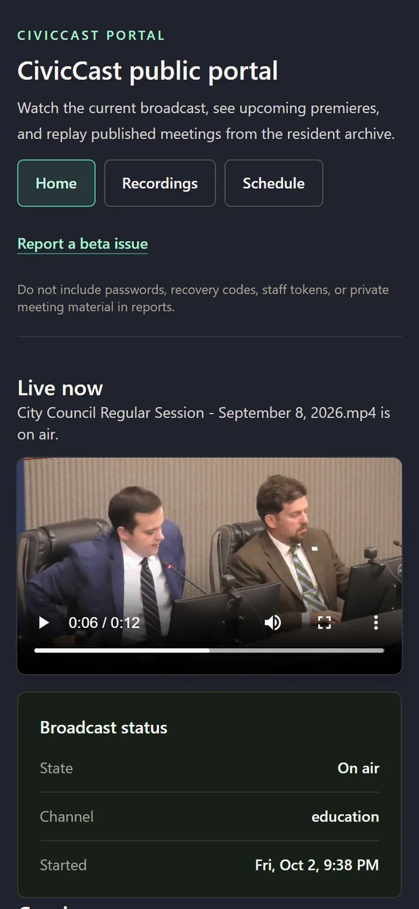
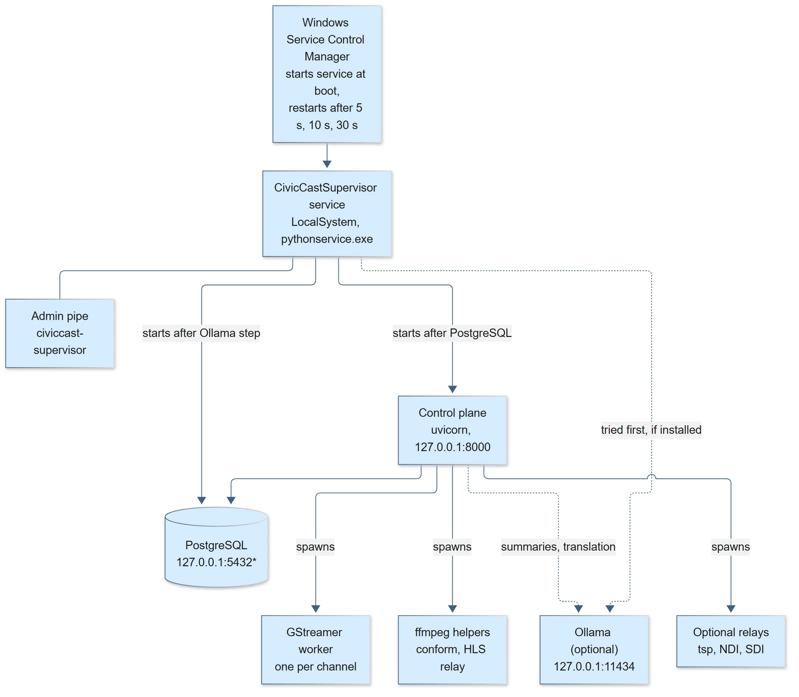

Release 1.0.0-beta.10 · pre-release for testing
A signed Beta.11 candidate has been installed over an existing Beta.9 host and returned healthy. Its post-install channel-output check is incomplete; Beta.10 remains the latest published installer.
Public meetings, on the air.
CivicCast is open-source software for public-access stations and small cities. It schedules your channels and keeps them on the air, records and captions your meetings, and publishes them to a portal where residents can watch. It runs on one Windows PC that you control.

- Open sourceCode under Apache-2.0, documentation under CC BY 4.0.
- One Windows PCInstalls as a Windows service on hardware you own.
- 3 channels, 8 hoursHeld on air in a lab run, with 50 program changes watched and no gaps.
- 10 of 10Clean-install checks passed on the published installer.
- Pre-releaseNot yet run at a real station. The evidence section lists what is unproven.
Why it exists
A meeting should not need five tools to reach residents.
- Camera recorder
- Playout box
- Caption service
- Website upload
- Schedule spreadsheet
One schedule. One library. One resident portal.
CivicCast covers the path a public meeting takes: it is scheduled, aired on a channel, recorded, captioned, checked by a person and published for residents. Staff work in one web console. Residents use a separate public portal. The speech recognition and AI models that make captions and summaries run on the station, not in someone else's cloud.
What it does
The whole path from agenda to archive.
Six jobs, each tagged with what the evidence supports today.
-
Schedule and air
Measured in lab- Channels for education, government and public programming, each with its own schedule.
- Premieres, recurring program-guide slots and auto-schedule rules that the station compiles into what airs.
- Program changes without a gap: in an eight-hour three-channel run, the picture gap at changes was at most 0.033 seconds.
- Loudness leveled to -16 LUFS, with 16 of 16 measured windows in range on all three channels.
Lab run on an earlier internal build of the same engine.
-
Run the meeting
Partly tested- A live screen with a nine-row pre-flight checklist before a stream starts.
- Take a live source to air from the Channels screen and return to the schedule afterwards.
- Remote guests through VDO.Ninja rooms, when a VDO.Ninja address is configured.
Live takeover and remote guests have not been field-tested.
-
Record and collect
Working in lab- Recurring capture schedules for live inputs and network streams, plus Record now.
- Upload recordings, trim them, and import an agenda whose items link to times in the video.
- Residents can submit programs through a form; staff review them in a queue.
-
Caption and review
Known limit- Speech recognition on the station makes live captions in the channel output and offline captions for recordings.
- A person reviews and approves caption text before it attaches to a saved recording.
- AI summaries cite the transcript times behind each claim. This is a preview: the approval step has a known defect in beta.10.
Under heavy load, live captioning can skip stretches of audio. About 160 seconds were skipped across two channels in a quiet-machine eight-hour run.
-
Publish to residents
Working in lab- A public portal with Live now, searchable recordings, an upcoming schedule and watch pages with captions and agenda chapters.
- A publish step with approvals, so a recording reaches residents when staff say so.
- Works on a phone as well as a desktop.
-
Deliver and monitor
Headend unproven- Channel outputs as HLS web streams or a UDP transport stream for a cable headend.
- A readiness screen that says whether the station is safe to broadcast, and five staff roles from setup admin to records clerk.
- The Windows service starts and restarts the database, playout workers and caption worker for you.
Real cable-operator acceptance and SDI capture cards have not been tested.
How it works
One meeting, six steps.
The order is real: each step feeds the next.
Schedule it
Add the meeting to the schedule and the program guide. Import the agenda.
Meeting operatorRun it
Check readiness, go live or let the channel air its program, and watch the output.
Camera operator, meeting operatorRecord it
The recording lands in the asset library, ready to trim and package.
Meeting operatorCaption and check it
Captions are generated on the station. A person reviews them before they attach.
Records clerkPublish it
Approve the publish steps. The recording and its captions appear on the portal.
Publish operatorResidents watch
Residents open the portal, search the archive and watch with captions.
Everyone
Screens
What residents see.
Captured from a lab station running sample content. The staff console is covered screen by screen in the manual.





Architecture
One service, a few well-known parts.
CivicCast is a Windows service that supervises the programs it needs. Everything talks over the station's own loopback address.

- SupervisorThe CivicCast Native Supervisor service starts the other programs and restarts them if they stop.
- Control planeA Python web application on 127.0.0.1:8000 serving the staff console, the resident portal and a documented HTTP API of 488 operations.
- DatabasePostgreSQL, created and configured by the installer.
- PlayoutOne GStreamer worker per channel, with seamless program changes and a watchdog that ends a stuck change. Outputs are HLS and UDP transport stream.
- Captions and AIfaster-whisper for speech recognition and a local Ollama runtime for summaries, both on the station.
- Trust at installThe installer is Authenticode-signed. Setup verifies each component pack's signature and every file's hash before it installs anything.
Evidence and limits
What has been measured, and what has not.
Beta.10 is a pre-release. Here is the record behind the claims on this page.
| Measure | Result | Build |
|---|---|---|
| Clean install, all checks | 10 of 10 | Published beta.10 |
| Station boot after install | 26 seconds | Published beta.10 |
| Program changes watched, 3 channels | 50, no holes | Earlier build, 8 hours |
| Loudness windows in range | 16 of 16 | Earlier build, 8 hours |
| Longest run, 2 channels | About 59 hours, no restart | Earlier build |
Every figure comes from the project's own lab runs. No outside group has audited it. The full record is in the beta.10 verification file.
Quick start
Install it on a Windows PC.
- Get the kitThe release page carries
setup.exeand five.ccpackcomponent packs, about 4.9 GB in all. A first install also needs thestationfolder of speech and AI model files, which is not on the release page. Chapter 10 of the manual explains the folder layout. - Run
setup.exeWindows asks for administrator approval. Setup checks every pack, creates the database, runs a self-test and starts the CivicCast service. - Open the operator consoleUse the CivicCast Operator Console shortcut on the PC, which opens
http://127.0.0.1:8000/operator/. First setup only works from the station computer itself. - Create the first adminChoose the station name and an admin password, and save the recovery kit. The console stays locked until you confirm it.
- Check ReadinessThe Readiness screen reports whether the station is safe to broadcast.
Status: only the clean-install path was tested on the published build. Upgrading from an earlier release, and a first install without the kit, were not.
Documentation
A manual for each kind of reader.
The User Manual has a plain-language part for volunteers, camera operators, editors, records clerks and station staff, and a technical part for a city's IT staff, with architecture diagrams and a full appendix.
- User Manual (PDF)The complete manual, formatted for reading and printing.
- User Manual (Word)The same manual as an editable document.
- User Manual (Markdown)The source text, readable in the browser.
- Windows install notesThe release status and what a first install needs.
- ChangelogWhat changed in each release.
- ContributingHow to propose a change to the code or the docs.
- Security policyHow to report a vulnerability.
- Report a beta issueUse a GitHub account. Leave out passwords, recovery codes and private meeting material.
Try beta.10 and tell us what breaks.
It is a pre-release built for testing. Run it alongside your current process, read the known issues for the screens you use, and report what you find.